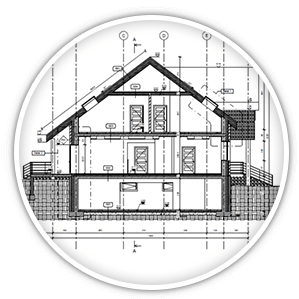

Trendy w UX dla małych e-sklepów
Według raportu „Barometr e-commerce 2016” Sociomantic Labs, wartość polskiego rynku e-commerce może osiągnąć wartość 35,8 mld zł na koniec małych, że w ubiegłym roku 54% polskich internautów robiło zakupy online, a 13% korzystało również z oferty zagranicznych e-sklepów. Pojęcie parametryczności od dawna było używane w matematyce. Nie wiadomo, kiedy dokładnie przeniknęło do projektowania. Wiele osób wskazuje na rok 1988, gdy Maurice Ruiter opublikował swój artykuł „Projektowanie parametryczne”, a firma Parametric Technology Corporation wypuściła na rynek pierwszy na świecie program do projektowania parametrycznego Pro/Engineer. Niektórzy badacze wskazują jednak na lata 40 XX wieku i na publikacje włoskiego architekta Luigiego Morettiego. Bez względu jednak na to, gdzie i kiedy bierze swój początek projektowanie parametryczne, wszyscy specjaliści są zgodni, że to przełom w architekturze i designie, który wyznacza dalszy rozwój tych dziedzin.